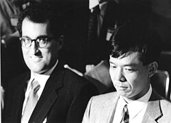
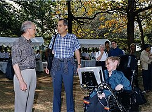

{kind=link}
Edward Witten (born August 26, 1951) is an American theoretical physicist known for his contributions to string theory, topological quantum field theory, and various areas of mathematics. He is a professor emeritus in the school of natural sciences at the Institute for Advanced Study in Princeton.[4] Witten is a researcher in string theory, quantum gravity, supersymmetric quantum field theories, and other areas of mathematical physics. Witten's work has also significantly impacted pure mathematics.[5] In 1990, he became the first physicist to be awarded a Fields Medal by the International Mathematical Union, for his mathematical insights in physics, such as his 1981 proof of the positive energy theorem in general relativity, and his interpretation of the Jones invariants of knots as Feynman integrals.[6] He is considered the practical founder of M-theory.[7]
Early life and education
Witten was born on August 26, 1951, in Baltimore, Maryland, to a Jewish family,[8] as the eldest of four children. His brother Matt Witten became a writer, and his brother Jesse Amnon Witten became a law partner in the firm Faegre Drinker Biddle & Reath.[9] Their sister Celia M. Witten earned a Ph.D. in mathematics from Stanford University[10] and then an M.D. from the University of Miami.[11] Edward Witten is the son of Lorraine (born Wollach) Witten[12] and Louis Witten, a theoretical physicist specializing in gravitation and general relativity.[13]
Witten attended the Park School of Baltimore (class of 1968), and received his Bachelor of Arts degree with a major in history and minor in linguistics from Brandeis University in 1971.[14]
He had aspirations in journalism and politics and published articles in both The New Republic and The Nation in the late 1960s.[15][16] In 1972, he worked for six months on George McGovern's presidential campaign.[17]
Witten attended the University of Michigan for one semester as an economics graduate student before dropping out.[18] He returned to academia, enrolling in applied mathematics at Princeton University in 1973, then shifting departments and receiving a PhD in physics in 1976 and completing a dissertation, "Some problems in the short distance analysis of gauge theories", under the supervision of David Gross.[19] He was a National Radio Astronomy Observatory summer student (1974),[20] held a fellowship at Harvard University (1976–77), visited Oxford University (1977–78),[3][21] was a junior fellow in the Harvard Society of Fellows (1977–1980), and held a MacArthur Foundation fellowship (1982).[4]
Research
Fields medal work
Witten was awarded the Fields Medal by the International Mathematical Union in 1990.[22]
In a written address to the ICM, Michael Atiyah said of Witten:[5]
Although he is definitely a physicist (as his list of publications clearly shows) his command of mathematics is rivaled by few mathematicians, and his ability to interpret physical ideas in mathematical form is quite unique. Time and again he has surprised the mathematical community by a brilliant application of physical insight leading to new and deep mathematical theorems ... He has made a profound impact on contemporary mathematics. In his hands physics is once again providing a rich source of inspiration and insight in mathematics.[5]
{kind=link}

As an example of Witten's work in pure mathematics, Atiyah cites his application of techniques from quantum field theory to the mathematical subject of low-dimensional topology. In the late 1980s, Witten coined the term topological quantum field theory for a certain type of physical theory in which the expectation values of observable quantities encode information about the topology of spacetime.[23] In particular, Witten realized that a physical theory now called Chern–Simons theory could provide a framework for understanding the mathematical theory of knots and 3-manifolds.[24] Although Witten's work was based on the mathematically ill-defined notion of a Feynman path integral and therefore not mathematically rigorous, mathematicians were able to systematically develop Witten's ideas, leading to the theory of Reshetikhin–Turaev invariants.[25]
Another result for which Witten was awarded the Fields Medal was his proof in 1981 of the positive energy theorem in general relativity.[26] This theorem asserts that (under appropriate assumptions) the total energy of a gravitating system is always positive and can be zero only if the geometry of spacetime is that of flat Minkowski space. It establishes Minkowski space as a stable ground state of the gravitational field. While the original proof of this result due to Richard Schoen and Shing-Tung Yau used variational methods,[27][28] Witten's proof used ideas from supergravity theory to simplify the argument.[29]
A third area mentioned in Atiyah's address is Witten's work relating supersymmetry and Morse theory,[30] a branch of mathematics that studies the topology of manifolds using the concept of a differentiable function. Witten's work gave a physical proof of a classical result, the Morse inequalities, by interpreting the theory in terms of supersymmetric quantum mechanics.[30]
M-theory
By the mid 1990s, physicists working on string theory had developed five different consistent versions of the theory. These versions are known as type I, type IIA, type IIB, and the two flavors of heterotic string theory (SO(32) and E8×E8). The thinking was that of these five candidate theories, only one was the actual correct theory of everything, and that theory was the one whose low-energy limit matched the physics observed in our world today.[31]
Speaking at Strings '95 conference at University of Southern California, Witten made the surprising suggestion that these five string theories were in fact not distinct theories, but different limits of a single theory, which he called M-theory.[32][33] Witten's proposal was based on the observation that the five string theories can be mapped to one another by certain rules called dualities and are identified by these dualities. It led to a flurry of work now known as the second superstring revolution.[31]
Other work
{kind=link}

Another of Witten's contributions to physics was to the result of gauge/gravity duality. In 1997, Juan Maldacena formulated a result known as the AdS/CFT correspondence, which establishes a relationship between certain quantum field theories and theories of quantum gravity.[34] Maldacena's discovery has dominated high-energy theoretical physics for the past 15 years because of its applications to theoretical problems in quantum gravity and quantum field theory. Witten's foundational work following Maldacena's result has shed light on this relationship.[35]
In collaboration with Nathan Seiberg, Witten established several powerful results in quantum field theories. In their paper on string theory and noncommutative geometry, Seiberg and Witten studied certain noncommutative quantum field theories that arise as limits of string theory.[36] In another well-known paper, they studied aspects of supersymmetric gauge theory.[37] The latter paper, combined with Witten's earlier work on topological quantum field theory,[23] led to developments in the topology of smooth 4-manifolds, in particular the notion of Seiberg–Witten invariants.[38]
With Anton Kapustin, Witten has made deep mathematical connections between S-duality of gauge theories and the geometric Langlands correspondence.[39] Partly in collaboration with Seiberg, one of his recent interests includes aspects of field theoretical description of topological phases in condensed matter and non-supersymmetric dualities in field theories that, among other things, are of high relevance in condensed matter theory. In 2016, he has also brought tensor models to the relevance of holographic and quantum gravity theories, by using them as a generalization of the Sachdev–Ye–Kitaev model.[40]
Witten has published influential and insightful work in many aspects of quantum field theories and mathematical physics, including the physics and mathematics of anomalies, integrability, dualities, localization, and homologies. Many of his results have deeply influenced areas in theoretical physics (often well beyond the original context of his results), including string theory, quantum gravity and topological condensed matter.[41] In particular, Witten is known for collaborating with Ruth Britto on a method calculating scattering amplitudes known as the BCFW recursion relations.
Awards and honors
Witten has been honored with numerous awards including a MacArthur Grant (1982), the Fields Medal (1990), the Golden Plate Award of the American Academy of Achievement (1997),[42] the Nemmers Prize in Mathematics (2000), the National Medal of Science[43] (2002), Pythagoras Award[44] (2005), the Henri Poincaré Prize (2006), the Crafoord Prize (2008), the Lorentz Medal (2010) the Isaac Newton Medal (2010) and the Breakthrough Prize in Fundamental Physics (2012). Since 1999, he has been a Foreign Member of the Royal Society (London), and in March 2016 was elected an Honorary Fellow of the Royal Society of Edinburgh.[45][46] Pope Benedict XVI appointed Witten as a member of the Pontifical Academy of Sciences (2006). He also appeared in the list of Time magazine's 100 most influential people of 2004. In 2012, he became a fellow of the American Mathematical Society.[47] Witten was elected as a member of the American Academy of Arts and Sciences in 1984, a member of the National Academy of Sciences in 1988, and a member of the American Philosophical Society in 1993.[48][49][50] In May 2022 he was awarded an honorary Doctor of Sciences from the University of Pennsylvania.[51]
In an informal poll at a 1990 cosmology conference, Witten received the largest number of mentions as "the smartest living physicist".[52]
Personal life
Witten has been married to Chiara Nappi, a professor of physics at Princeton University, since 1979.[53] They have two daughters and a son. Their daughter Ilana B. Witten is a neuroscientist at Princeton University,[54] and daughter Daniela Witten is a biostatistician at the University of Washington.[55]
Witten sits on the board of directors of Americans for Peace Now and on the advisory council of J Street.[56] He supports the two-state solution and advocates a boycott of Israeli institutions and economic activity beyond its 1967 borders, though not of Israel itself.[57] Witten lived in Israel for a year in the 1960s.[58]
Selected publications
- Some Problems in the Short Distance Analysis of Gauge Theories. Princeton University, 1976. (Dissertation.)
- Roman Jackiw, David Gross, Sam B. Treiman, Edward Witten, Bruno Zumino. Current Algebra and Anomalies: A Set of Lecture Notes and Papers. World Scientific, 1985.
- Green, M., John H. Schwarz, and E. Witten. Superstring Theory. Vol. 1, Introduction. Cambridge Monographs on Mathematical Physics. Cambridge, UK: Cambridge University Press, 1988. ISBN 978-0-521-35752-4.
- Green, M., John H. Schwarz, and E. Witten. Superstring Theory. Vol. 2, Loop Amplitudes, Anomalies and Phenomenology. Cambridge, UK: Cambridge University Press, 1988. ISBN 978-0-521-35753-1.
- Quantum fields and strings: a course for mathematicians. Vols. 1, 2. Material from the Special Year on Quantum Field Theory held at the Institute for Advanced Study, Princeton, NJ, 1996–1997. Edited by Pierre Deligne, Pavel Etingof, Daniel S. Freed, Lisa C. Jeffrey, David Kazhdan, John W. Morgan, David R. Morrison and Edward Witten. American Mathematical Society, Providence, RI; Institute for Advanced Study (IAS), Princeton, NJ, 1999. Vol. 1: xxii+723 pp.; Vol. 2: pp. i–xxiv and 727–1501. ISBN 0-8218-1198-3, 81–06 (81T30 81Txx).
References
- ^ "Announcement of 2016 Winners". World Cultural Council. June 6, 2016. Archived from the original on June 7, 2016. Retrieved June 6, 2016.
- ^ Woit, Peter (2006). Not Even Wrong: The Failure of String Theory and the Search for Unity in Physical Law. New York: Basic Books. p. 105. ISBN 0-465-09275-6.
- ^ a b c "Edward Witten – Adventures in physics and math (Kyoto Prize lecture 2014)" (PDF). Archived from the original (PDF) on August 23, 2016. Retrieved October 30, 2016.
- ^ a b "Edward Witten". Institute for Advanced Study. December 9, 2019. Retrieved July 14, 2022.
- ^ a b c Atiyah, Michael (1990). "On the Work of Edward Witten" (PDF). Proceedings of the International Congress of Mathematicians. pp. 31–35. Archived from the original (PDF) on March 1, 2017.
- ^ Michael Atiyah. "On the Work of Edward Witten" (PDF). Mathunion.org. Archived from the original (PDF) on March 1, 2017. Retrieved March 31, 2017.
- ^ Duff 1998, p. 65
- ^ J J O'Connor; E F Robertson (September 2009). "Edward Witten – Biography". Maths History. University of St Andrews. Retrieved February 1, 2023.
- ^ "LDB Appoints Jesse A. Witten to the LDB Legal Advisory Board". Brandeis Center. October 20, 2020.
- ^ Celia Witten at the Mathematics Genealogy Project
- ^ "Celia Witten, M.D., Ph.D." The University of Texas at Austin, College of Pharmacy.
- ^ "Obituary for Lorraine Witten". The Cincinnati Enquirer. February 10, 1987. p. 13.
- ^ The International Who's Who: 1992–93. Europa Publications. 1992. p. 1754. ISBN 978-0-946653-84-3.
- ^ "Edward Witten (1951)". www.nsf.gov. Retrieved August 25, 2020.
- ^ Witten, Edward (October 18, 1969). "Are You Listening, D.H. Lawrence?". The New Republic.
- ^ Witten, Edward (December 16, 1968). "The New Left". The Nation.
- ^ Farmelo, Graham (May 2, 2019). "'The Universe Speaks in Numbers' – Interview 5". Graham Farmelo. Archived from the original on May 3, 2019. Retrieved August 25, 2020. Alt URL
- ^ "Edward Witten". www.aip.org. February 24, 2022. Retrieved June 21, 2022.
- ^ Witten, E. (1976). Some problems in the short distance analysis of gauge theories.
- ^ "The Observer, Volume 15, Number 3 (Records of the NRAO)". NRAO Archive. June 1974. p. 27. Archived (PDF) from the original on January 30, 2026. Retrieved January 30, 2026.
{{cite web}}: CS1 maint: year (link) - ^ Interview by Hirosi Ooguri Archived March 29, 2017, at the Wayback Machine, Notices of the American Mathematical Society, May 2015, pp. 491–506.
- ^ "Edward Witten" (PDF). 2011. Archived from the original (PDF) on February 4, 2012. Retrieved April 13, 2021.
- ^ a b Witten, Edward (1988), "Topological quantum field theory", Communications in Mathematical Physics, 117 (3): 353–386, Bibcode:1988CMaPh.117..353W, doi:10.1007/BF01223371, S2CID 43230714
- ^ Witten, Edward (1989). "Quantum Field Theory and the Jones Polynomial" (PDF). Communications in Mathematical Physics. 121 (3): 351–399. Bibcode:1989CMaPh.121..351W. doi:10.1007/BF01217730. S2CID 14951363.
- ^ Reshetikhin, Nicolai; Turaev, Vladimir (1991). "Invariants of 3-manifolds via link polynomials and quantum groups". Inventiones Mathematicae. 103 (1): 547–597. Bibcode:1991InMat.103..547R. doi:10.1007/BF01239527. S2CID 123376541.
- ^ Witten, Edward (1981). "A new proof of the positive energy theorem". Communications in Mathematical Physics. 80 (3): 381–402. Bibcode:1981CMaPh..80..381W. doi:10.1007/BF01208277. S2CID 1035111.
- ^ Schoen, Robert; Yau, Shing-Tung (1979). "On the proof of the positive mass conjecture in general relativity". Communications in Mathematical Physics. 65 (1): 45. Bibcode:1979CMaPh..65...45S. doi:10.1007/BF01940959. S2CID 54217085.
- ^ Schoen, Robert; Yau, Shing-Tung (1981). "Proof of the positive mass theorem. II". Communications in Mathematical Physics. 79 (2): 231. Bibcode:1981CMaPh..79..231S. doi:10.1007/BF01942062. S2CID 59473203.
- ^ Parker, Thomas H. (1985). "Gauge choice in Witten's energy expression". Communications in Mathematical Physics. 100 (4): 471–480. Bibcode:1985CMaPh.100..471P. doi:10.1007/BF01217725. ISSN 0010-3616.
- ^ a b Witten, Edward (1982). "Super-symmetry and Morse Theory". Journal of Differential Geometry. 17 (4): 661–692. doi:10.4310/jdg/1214437492.
- ^ a b Rickles, Dean (August 23, 2016). A Brief History of String Theory. Springer. ISBN 978-3-662-50183-2.
- ^ Witten, E. (March 13–18, 1995). Some problems of strong and weak coupling. physics.usc.edu. Future Perspectives in String Theory. Los Angeles: University of Southern California. Archived from the original on November 15, 2020. Retrieved February 1, 2023.
- ^ Witten, Edward (1995). "String theory dynamics in various dimensions". Nuclear Physics B. 443 (1): 85–126. arXiv:hep-th/9503124. Bibcode:1995NuPhB.443...85W. doi:10.1016/0550-3213(95)00158-O. S2CID 16790997.
- ^ Juan M. Maldacena (1998). "The Large N limit of superconformal field theories and supergravity". Advances in Theoretical and Mathematical Physics. 2 (2): 231–252. arXiv:hep-th/9711200. Bibcode:1998AdTMP...2..231M. doi:10.4310/ATMP.1998.V2.N2.A1.
- ^ Edward Witten (1998). "Anti-de Sitter space and holography". Advances in Theoretical and Mathematical Physics. 2 (2): 253–291. arXiv:hep-th/9802150. Bibcode:1998AdTMP...2..253W. doi:10.4310/ATMP.1998.v2.n2.a2. S2CID 10882387.
- ^ Seiberg, Nathan; Witten, Edward (1999). "String Theory and Noncommutative Geometry". Journal of High Energy Physics. 1999 (9): 032. arXiv:hep-th/9908142. Bibcode:1999JHEP...09..032S. doi:10.1088/1126-6708/1999/09/032. S2CID 668885.
- ^ Seiberg, Nathan; Witten, Edward (1994). "Electric-magnetic duality, monopole condensation, and confinement in N=2 supersymmetric Yang-Mills theory". Nuclear Physics B. 426 (1): 19–52. arXiv:hep-th/9407087. Bibcode:1994NuPhB.426...19S. doi:10.1016/0550-3213(94)90124-4. S2CID 14361074.
- ^ Donaldson, Simon K. (1996), "The Seiberg–Witten equations and 4-manifold topology.", Bulletin of the American Mathematical Society, (N.S.), 33 (1): 45–70, doi:10.1090/S0273-0979-96-00625-8, MR 1339810
- ^ Kapustin, Anton; Witten, Edward (April 21, 2006). "Electric-Magnetic Duality And The Geometric Langlands Program". Communications in Number Theory and Physics. 1: 1–236. arXiv:hep-th/0604151. Bibcode:2007CNTP....1....1K. doi:10.4310/CNTP.2007.v1.n1.a1. S2CID 30505126.
- ^ Witten, Edward (October 31, 2016). "An SYK-Like Model Without Disorder". Journal of Physics A: Mathematical and Theoretical. 52 (47): 474002. arXiv:1610.09758. doi:10.1088/1751-8121/ab3752. S2CID 118412962.
- ^ Stiftung, Joachim Herz (July 3, 2023). "News". Joachim Herz Stiftung. Retrieved February 25, 2024.
- ^ "Golden Plate Awardees of the American Academy of Achievement". www.achievement.org. American Academy of Achievement.
- ^ "The President's National Medal of Science: Recipient Details". www.nsf.gov. National Science Foundation. 2003. Retrieved February 1, 2023.
- ^ "Il premio Pitagora al fisico teorico Witten". Il Crotonese (in Italian). September 23, 2005. Archived from the original on July 22, 2011.
- ^ "Current Fellows". royalsociety.org. Retrieved February 1, 2023.
- ^ "Fellows". June 21, 2016. Archived from the original on March 9, 2016. Retrieved March 8, 2016.
- ^ "Fellows of the American Mathematical Society". American Mathematical Society. Retrieved February 1, 2023.
- ^ "Edward Witten". American Academy of Arts & Sciences. Retrieved May 13, 2020.
- ^ "Edward Witten". www.nasonline.org. Retrieved May 13, 2020.
- ^ "APS Member History". search.amphilsoc.org. Retrieved March 21, 2022.
- ^ "Penn's 2022 Commencement Speaker and Honorary Degree Recipients". Retrieved May 30, 2022.
- ^ Lemonick, Michael (April 26, 2004). "Edward Witten". Time. Archived from the original on September 1, 2006. Retrieved November 1, 2011."At a 1990 conference on cosmology," wrote John Horgan in 2014, "I asked attendees, who included folks like Stephen Hawking, Michael Turner, James Peebles, Alan Guth and Andrei Linde, to nominate the smartest living physicist. Edward Witten got the most votes (with Steven Weinberg the runner-up). Some considered Witten to be in the same league as Einstein and Newton." See "Physics Titan Edward Witten Still Thinks String Theory 'on the Right Track'". scientificamerican.com. September 22, 2014. Retrieved October 14, 2014.
- ^ Witten, Ed. "The 2014 Kyoto Prize Commemorative Lecture in Basic Sciences" (PDF). Retrieved January 28, 2017.
- ^ "Faculty » Ilana B. Witten". princeton.edu. Retrieved November 18, 2016.
- ^ "UW Faculty » Daniela M. Witten". washington.edu. Retrieved July 9, 2015.
- ^ "Advisory Council". J Street. 2016. Retrieved October 14, 2016.
- ^ Bird, Kai; Abraham, David; Witten, Edward; Walzer, Michael; Brooks, Peter; Beinart, Peter; Gitlin, Todd. "For an Economic Boycott and Political Nonrecognition of the Israeli Settlements in the Occupied Territories | Todd Gitlin". ISSN 0028-7504. Retrieved February 1, 2023.
- ^ "Edward Witten for Americans for Peace Now". Americans for Peace Now. February 8, 2005. Retrieved April 5, 2024.
External links
- Faculty webpage
- Publications on ArXiv
- O'Connor, John J.; Robertson, Edmund F., "Edward Witten", MacTutor History of Mathematics Archive, University of St Andrews
- Edward Witten at the Mathematics Genealogy Project
- A Physicist's Physicist Ponders the Nature of Reality, Interview with Nathalie Wolchover in Quanta Magazine, November 28, 2017